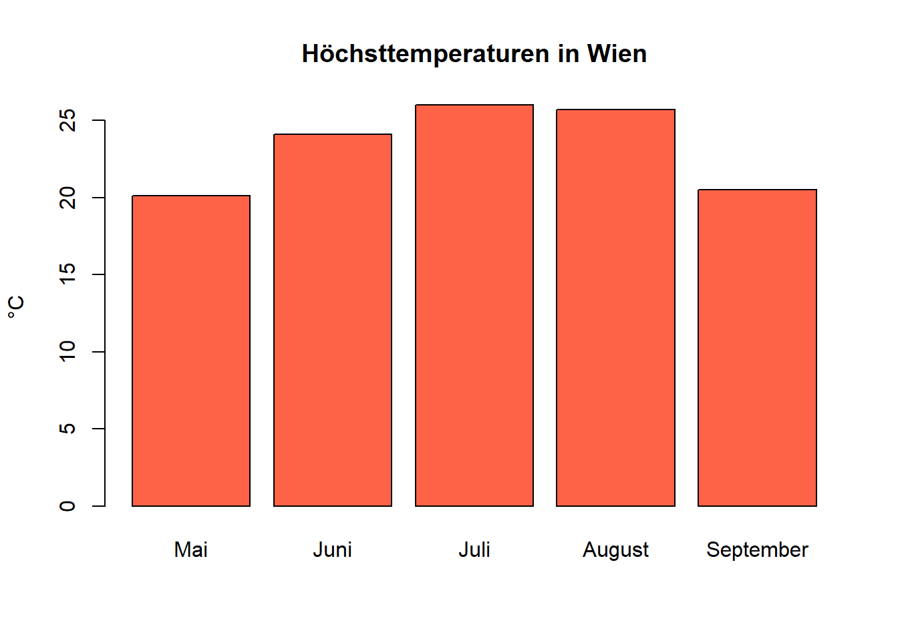
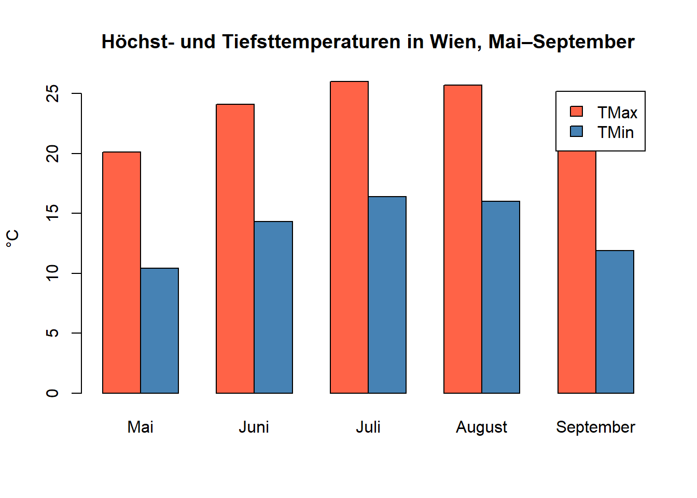
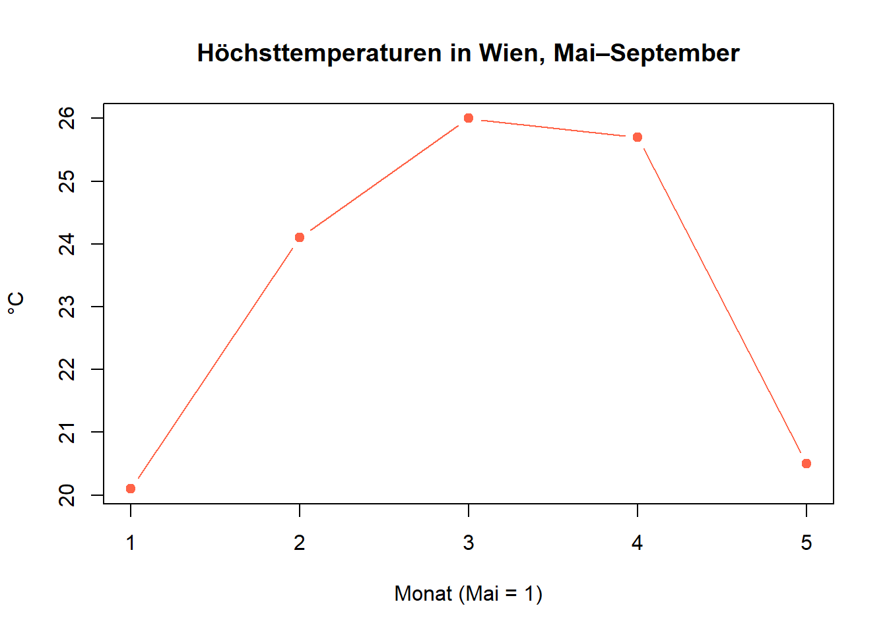
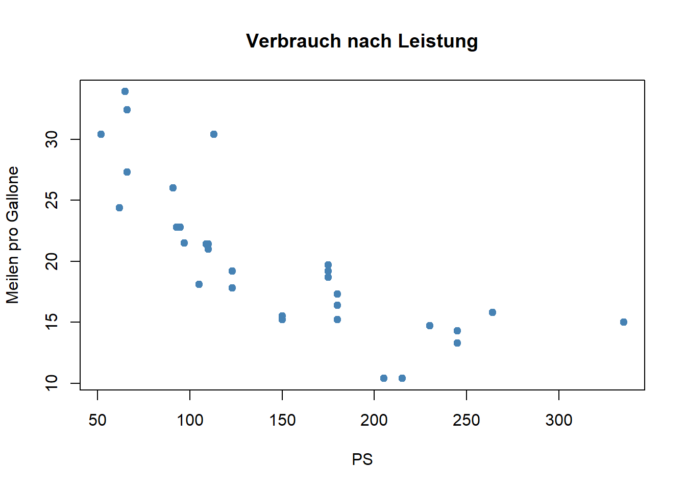
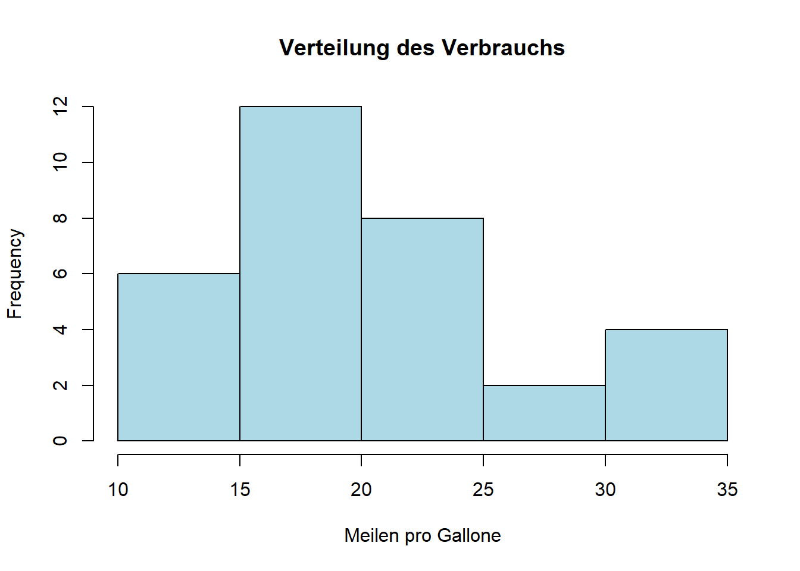
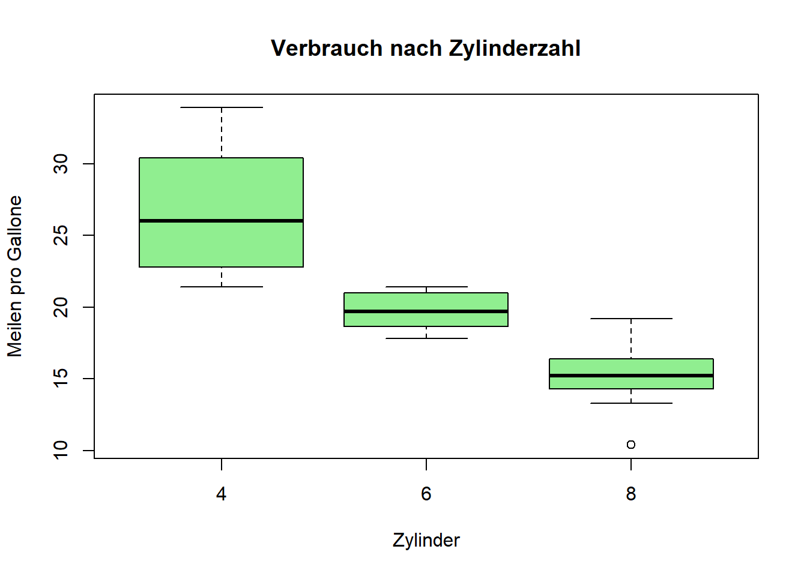
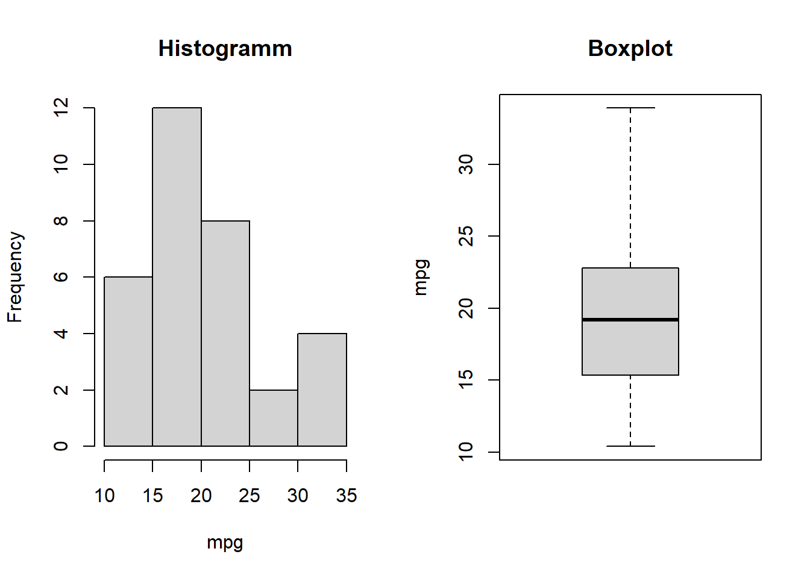

5 + 5[1] 105 - 5[1] 03 * 5[1] 15(5 + 5) / 2[1] 52^5[1] 3228 %/% 6[1] 428 %% 6[1] 4In dieser Einheit lernst du die grundlegenden Operationen in R kennen:
plot(), hist(), boxplot()Wie man mit RStudio, Projekten und Paketen arbeitet, steht in Einheit 0 (0_RINTRO.Rmd).
Führe die Code-Blöcke der Reihe nach aus (grüner Pfeil oben rechts im Block oder Strg/Cmd + Enter) — spätere Blöcke bauen auf den Variablen früherer Blöcke auf.
R lässt sich zunächst wie ein Taschenrechner nutzen:
| Operator | Bedeutung |
|---|---|
+ |
Addition |
- |
Subtraktion |
* |
Multiplikation |
/ |
Division |
^ |
Potenzierung: 3^2 ergibt 9 |
%/% |
ganzzahlige Division: 5 %/% 3 ergibt 1 |
%% |
Modulo (Rest der Division): 5 %% 3 ergibt 2 |
5 + 5[1] 105 - 5[1] 03 * 5[1] 15(5 + 5) / 2[1] 52^5[1] 3228 %/% 6[1] 428 %% 6[1] 4Mit einer Variable speicherst du einen Wert unter einem Namen, um später darauf zuzugreifen. Zugewiesen wird mit dem Pfeil <-:
meine_zahl <- 4
meine_zahl[1] 4Tipp: Alt + - fügt <- samt Leerzeichen ein.
Aussagekräftige Namen machen Code lesbar — auch für dich selbst in drei Monaten:
einwohner <- 48000
flaeche_km2 <- 12.5
bevoelkerungsdichte <- einwohner / flaeche_km2
bevoelkerungsdichte[1] 3840wohneinheiten_gesamt statt xanzahl_aepfel, nicht anzahlAepfel oder anzahl.aepfelmean, data, c, sum vermeidenhat_ringe, ist_studentflaeche_km2 statt Fläche km²Eine Funktion nimmt Eingaben entgegen und gibt ein Ergebnis zurück. Man ruft sie mit ihrem Namen und runden Klammern auf; die Eingaben in der Klammer heißen Argumente:
sqrt(16) # Quadratwurzel, ein Argument[1] 4round(3.14159, digits = 2) # zwei Argumente: Zahl und Anzahl Nachkommastellen[1] 3.14round(3.14159) # digits weggelassen → Standardwert 0[1] 3name = wert gibt man ein Argument beim Namen an. Innerhalb einer Funktionsklammer ist = also keine Zuweisung, sondern benennt ein Argument.?roundnumeric — Zahlen, auch mit Nachkommastellen, z. B. 4.5integer — ganze Zahlen, geschrieben mit L: 4L (zählen ebenfalls als Zahl)logical — TRUE oder FALSEcharacter — Text, immer in Anführungszeichen: "Wien"gewicht <- 42.5
stadt <- "Wien"
ist_student <- TRUEclass() zeigt den Datentyp einer Variable:
class(gewicht)[1] "numeric"class(stadt)[1] "character"class(ist_student)[1] "logical"Rechnen geht nur mit Zahlen. Ist eine Zahl versehentlich als Text gespeichert, gibt es einen Fehler:
kaltmiete <- 550
nebenkosten <- "350" # in Anführungszeichen → Text, nicht Zahl
kaltmiete + nebenkostenError in `kaltmiete + nebenkosten`:
! nicht-numerisches Argument für binären Operatorclass() zeigt, wo das Problem liegt:
class(nebenkosten)[1] "character"Mit as.numeric() wird der Text in eine Zahl umgewandelt:
warmmiete <- kaltmiete + as.numeric(nebenkosten)
warmmiete[1] 900Für jeden Datentyp gibt es eine solche as.*()-Funktion. Was sich nicht umwandeln lässt, wird zu NA (fehlender Wert), mit Warnung:
as.character(42) # Zahl -> Text[1] "42"as.numeric(TRUE) # TRUE -> 1 (FALSE -> 0)[1] 1as.numeric("drei") # nicht umwandelbar -> NAWarning: NAs durch Umwandlung erzeugt[1] NAAuf eine Vergleichsfrage antwortet R mit TRUE oder FALSE:
| Operator | Frage |
|---|---|
> / >= |
größer / größer-gleich |
< / <= |
kleiner / kleiner-gleich |
== |
gleich? (zwei Gleichheitszeichen!) |
!= |
ungleich? |
3 > 4[1] FALSE7 >= 3 + 4[1] TRUE7 == 0[1] FALSE7 != 0[1] TRUEHäufige Falle: Ein einzelnes = ist ein Zuweisungszeichen (bzw. benennt ein Argument), kein Vergleich. Für „ist gleich?” braucht es immer ==:
7 = 0 # Fehler: R versucht, der Zahl 7 etwas zuzuweisenError in `7 = 0`:
! ungültige (do_set) linke Seite in ZuweisungBei Text wird Groß-/Kleinschreibung unterschieden:
alter <- 20
alter >= 18[1] TRUE"R" == "r"[1] FALSE"Wien" != "Graz"[1] TRUEMehrere Bedingungen verknüpft man mit & (und), | (oder), ! (nicht):
(alter >= 18) & (alter < 65)[1] TRUE!(alter == 20)[1] FALSE%/% und %%).# dein CodeEin Vektor speichert mehrere Werte desselben Typs — z. B. mehrere Messwerte oder Namen. Mit c() (combine) werden Werte zu einem Vektor zusammengefasst:
zahlen <- c(1, 10, 49)
buchstaben <- c("a", "b", "c")Alle Elemente eines Vektors haben denselben Datentyp. Mischt man Typen, wandelt R ohne Warnung alles in den allgemeinsten Typ um (hier: Text):
gemischt <- c(1, "a", TRUE)
gemischt[1] "1" "a" "TRUE"class(gemischt)[1] "character": erzeugt eine Folge in Einerschritten, seq() mit frei wählbarer Schrittweite; length() gibt die Anzahl der Elemente:
1:10 [1] 1 2 3 4 5 6 7 8 9 10seq(from = 0, to = 100, by = 25)[1] 0 25 50 75 100length(zahlen)[1] 3Langjährige Durchschnittswerte der Höchst- und Tiefsttemperatur pro Monat in °C (Quelle: climate-data.org):
# Mai Juni Juli Aug Sep
tmax_wien <- c(20.1, 24.1, 26.0, 25.7, 20.5)
tmin_wien <- c(10.4, 14.3, 16.4, 16.0, 11.9)Mit names() bekommt jedes Element einen Namen — so ist klar, welcher Wert zu welchem Monat gehört. Den Vektor der Monate speichern wir einmal als Variable und verwenden ihn zweimal:
monate <- c("Mai", "Juni", "Juli", "August", "September")
names(tmax_wien) <- monate
names(tmin_wien) <- monate
tmax_wien Mai Juni Juli August September
20.1 24.1 26.0 25.7 20.5 Aus einem benannten Vektor macht barplot() mit einem Befehl eine beschriftete Grafik — die Namen werden zu Achsenbeschriftungen:
barplot(tmax_wien,
main = "Höchsttemperaturen in Wien",
ylab = "°C",
col = "tomato")
Hinweis: Weitere Grafiken folgen in Teil 4 dieser Einheit und in Einheit 3.
Rechenoperationen zwischen zwei Vektoren erfolgen elementweise:
c(1, 2, 3) + c(4, 5, 6) # entspricht c(1+4, 2+5, 3+6)[1] 5 7 9tmittel_wien <- (tmax_wien + tmin_wien) / 2
tmittel_wien Mai Juni Juli August September
15.25 19.20 21.20 20.85 16.20 Andere Funktionen fassen einen ganzen Vektor zu einer Zahl zusammen:
mean(tmax_wien) # Mittelwert[1] 23.28max(tmax_wien) # Maximum (min() für das Minimum)[1] 26sum(tmax_wien) # Summe[1] 116.4round(mean(tmax_wien), 1) # Funktionen lassen sich ineinander schachteln[1] 23.3sort(tmax_wien) # sortiert (decreasing = TRUE für absteigend) Mai September Juni August Juli
20.1 20.5 24.1 25.7 26.0 Mit eckigen Klammern [ ] wählst du Elemente aus. Achtung: das erste Element hat den Index 1, nicht 0.
tmax_wien[1] # erstes Element (Mai) Mai
20.1 tmax_wien[c(2, 4)] # mehrere Elemente über einen Indexvektor Juni August
24.1 25.7 tmax_wien[2:4] # ein Bereich Juni Juli August
24.1 26.0 25.7 tmax_wien["Juli"] # über den NamenJuli
26 Ein Vergleich auf einem Vektor wird elementweise ausgewertet:
tmax_wien > 24 Mai Juni Juli August September
FALSE TRUE TRUE TRUE FALSE Damit lässt sich zählen, die Positionen finden oder filtern:
sum(tmax_wien > 24) # wie viele TRUE? (TRUE zählt als 1, FALSE als 0)[1] 3which(tmax_wien > 24) # an welchen Positionen steht TRUE? Juni Juli August
2 3 4 tmax_wien[tmax_wien > 24] # nur die Werte, für die die Bedingung zutrifft Juni Juli August
24.1 26.0 25.7 %in% prüft, ob ein Wert in einer Menge vorkommt — viel kürzer als mehrere == mit |:
sommer <- c("Juni", "Juli", "August")
monate %in% sommer[1] FALSE TRUE TRUE TRUE FALSEtmax_wien[monate %in% sommer] Juni Juli August
24.1 26.0 25.7 Weist man einer ausgewählten Stelle einen Wert zu, wird der Vektor dort überschrieben — per Position, Name oder Bedingung:
temperaturen <- tmax_wien # Kopie, damit tmax_wien unverändert bleibt
temperaturen["Juli"] <- 27.5 # einen einzelnen Wert korrigieren
temperaturen[temperaturen < 21] <- NA # alle kühlen Monate auf NA setzen
temperaturen Mai Juni Juli August September
NA 24.1 27.5 25.7 NA NA („not available”) steht für einen fehlenden Wert. Jede Rechnung mit NA ergibt wieder NA — deshalb liefern mean(), sum() & Co. NA, sobald ein einziger Wert fehlt. na.rm = TRUE lässt fehlende Werte weg:
mean(temperaturen)[1] NAmean(temperaturen, na.rm = TRUE)[1] 25.76667is.na() prüft elementweise auf fehlende Werte, ! kehrt das um:
is.na(temperaturen) Mai Juni Juli August September
TRUE FALSE FALSE FALSE TRUE sum(is.na(temperaturen)) # wie viele fehlen?[1] 2temperaturen[!is.na(temperaturen)] # nur die vorhandenen Werte Juni Juli August
24.1 27.5 25.7 names()).which.max())# dein CodeEine Matrix ist eine Sammlung von Elementen desselben Datentyps, angeordnet in Zeilen und Spalten — also zweidimensional, im Gegensatz zum eindimensionalen Vektor. Erzeugt wird sie mit matrix():
matrix(1:6, nrow = 2) # Standard: spaltenweise gefüllt [,1] [,2] [,3]
[1,] 1 3 5
[2,] 2 4 6matrix(1:6, nrow = 2, byrow = TRUE) # zeilenweise gefüllt [,1] [,2] [,3]
[1,] 1 2 3
[2,] 4 5 6nrow (oder ncol) legt die Anzahl der Zeilen (Spalten) fest.byrow = TRUE füllt zeilenweise; Standard ist spaltenweise.Die Temperaturvektoren aus Teil 2 lassen sich direkt zu einer Matrix zusammenfügen: erst alle Höchstwerte, dann alle Tiefstwerte — spaltenweise gefüllt, ergibt das genau eine Spalte pro Messwert:
wien_matrix <- matrix(c(tmax_wien, tmin_wien), ncol = 2)
wien_matrix [,1] [,2]
[1,] 20.1 10.4
[2,] 24.1 14.3
[3,] 26.0 16.4
[4,] 25.7 16.0
[5,] 20.5 11.9Wie names() bei Vektoren — nur getrennt für Zeilen und Spalten:
colnames(wien_matrix) <- c("TMax", "TMin")
rownames(wien_matrix) <- monate
wien_matrix TMax TMin
Mai 20.1 10.4
Juni 24.1 14.3
Juli 26.0 16.4
August 25.7 16.0
September 20.5 11.9Alternativ setzt man beides direkt beim Erstellen mit dimnames = list(zeilen, spalten):
wien_matrix <- matrix(c(tmax_wien, tmin_wien), ncol = 2,
dimnames = list(monate, c("TMax", "TMin")))Wie bei Vektoren mit [ ] — aber mit zwei Angaben: [Zeile, Spalte].
m[1, 2] → Element in Zeile 1, Spalte 2m[, 1] → alle Zeilen der 1. Spaltem[1, ] → alle Spalten der 1. Zeilem["Juli", "TMax"]wien_matrix["Juli", "TMax"][1] 26mean(wien_matrix[, "TMin"]) # Ø Tiefsttemperatur, alle Monate[1] 13.8mean(wien_matrix[1:2, "TMin"]) # nur Mai und Juni[1] 12.35rowMeans() berechnet den Mittelwert jeder Zeile — hier also die Durchschnittstemperatur pro Monat. Es ist dasselbe Ergebnis wie tmittel_wien aus Teil 2, nur in einem Schritt:
durchschnitt <- rowMeans(wien_matrix)
durchschnitt Mai Juni Juli August September
15.25 19.20 21.20 20.85 16.20 colMeans() rechnet pro Spalte — die mittlere Höchst- bzw. Tiefsttemperatur über den ganzen Zeitraum:
colMeans(wien_matrix) TMax TMin
23.28 13.80 cbind() fügt spaltenweise zusammen (column bind), rbind() zeilenweise (row bind). Wir hängen die Durchschnittstemperatur als Spalte an und die Spaltenmittelwerte als Zeile:
wien_erweitert <- cbind(wien_matrix, Mittel = durchschnitt)
wien_erweitert <- rbind(wien_erweitert, Gesamt = colMeans(wien_erweitert))
round(wien_erweitert, 1) TMax TMin Mittel
Mai 20.1 10.4 15.2
Juni 24.1 14.3 19.2
Juli 26.0 16.4 21.2
August 25.7 16.0 20.9
September 20.5 11.9 16.2
Gesamt 23.3 13.8 18.5barplot() funktioniert auch mit einer Matrix. t() dreht sie (Zeilen ↔︎ Spalten), damit die Monate auf der x-Achse landen; beside = TRUE stellt TMax und TMin nebeneinander:
barplot(t(wien_matrix), beside = TRUE,
legend.text = TRUE,
main = "Höchst- und Tiefsttemperaturen in Wien, Mai–September",
ylab = "°C",
col = c("tomato", "steelblue"))
wien_matrix die Werte für Juli und August (beide Spalten) aus.TMax - TMin und hänge sie mit cbind() als Spalte Spanne an wien_matrix an.# dein Codebarplot() hast du schon kennengelernt. Base-R hat noch einige weitere Grafikfunktionen, die mit einem einzigen Befehl ein Bild liefern — ideal, um sich beim Arbeiten schnell einen Eindruck zu verschaffen. Für vorzeigbare Grafiken nimmt man später ggplot2 (Einheit 3).
Neben unseren Temperaturen nutzen wir den eingebauten Datensatz mtcars (32 Automodelle). mtcars$mpg holt daraus eine Spalte als Vektor — mehr zu solchen Tabellen in Einheit 2.
Mit einem Vektor zeichnet plot() die Werte in ihrer Reihenfolge. Für einen Verlauf über die Zeit passt type = "b" (Punkte und Linie):
plot(tmax_wien, type = "b",
main = "Höchsttemperaturen in Wien, Mai–September",
xlab = "Monat (Mai = 1)", ylab = "°C",
pch = 19, col = "tomato")
Mit zwei Vektoren wird daraus ein Streudiagramm. main, xlab, ylab beschriften, pch wählt das Punktsymbol, col die Farbe:
plot(mtcars$hp, mtcars$mpg,
main = "Verbrauch nach Leistung",
xlab = "PS", ylab = "Meilen pro Gallone",
pch = 19, col = "steelblue")
hist() zeigt, wie sich die Werte eines Zahlenvektors verteilen; breaks steuert die Anzahl der Balken:
hist(mtcars$mpg, breaks = 8,
main = "Verteilung des Verbrauchs",
xlab = "Meilen pro Gallone", col = "lightblue")
Die Schreibweise y ~ gruppe heißt „y aufgeschlüsselt nach gruppe“. Hier: Verbrauch je Zylinderzahl:
boxplot(mpg ~ cyl, data = mtcars,
main = "Verbrauch nach Zylinderzahl",
xlab = "Zylinder", ylab = "Meilen pro Gallone",
col = "lightgreen")
par(mfrow = c(1, 2)) ordnet die folgenden Grafiken in einem Raster an (1 Zeile, 2 Spalten):
par(mfrow = c(1, 2))
hist(mtcars$mpg, main = "Histogramm", xlab = "mpg")
boxplot(mtcars$mpg, main = "Boxplot", ylab = "mpg")
par(mfrow = c(1, 1)) # wieder zurückstellenIn einem .R-Skript bleibt die Einstellung für die restliche Sitzung aktiv — deshalb immer zurücksetzen. In einem Notebook gilt sie nur innerhalb des Chunks.
tmin_wien als Linie mit Punkten in "steelblue".mtcars$hp) mit 10 Balken und sinnvoller Beschriftung.# dein Code